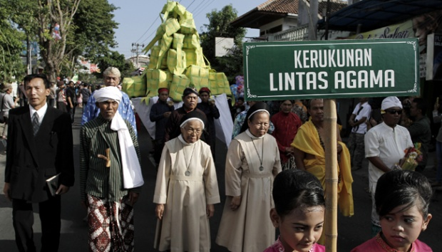

Indonesia Sebagai Negara Multikultural
 Alfiyyah
Juni, 24 2022
Alfiyyah
Juni, 24 2022
Indonesia dikenal sebagai negara multikultural dengan banyak keberagaman salah satunya adalah keberagaman agama.
Dewasa ini Indonesia mengakui 6 agama Islam, Katolik, Protestan, Hindu, Budha, dan Konghuchu.
Ragamnya agama yang hadir di Indonesia membuatnya rentan terhadap isu diskriminatif, radialis, dan rasis, yang dapat mengancam kesatuan bangsa, mulai dari perbedaan pendapat, perbedaan ajaran, perbedaan kebudayaan atau kebiasaan, yang mana masyarakat beragama Indonesia ini, masih ditetapkan sebagai bagian dari tanah air yang harus memiliki jiwa patriotisme terhadap bangsanya, agar menjadi satu padu sesuai dengan semboyan �Bhineka tunggal ika� artinya berbeda tetapi tetap satu.
Konsep Moderasi Beragama
Kekhawatiran tersebut membuat konsep Moderasi Beragama hadir sebagai upaya untuk mencegah terjadinya perilaku diskriminatif, radialis, dan rasis, agar hal tersebut dapat terealisasikan dengan baik, lahir konsep dalam penerapan moderasi beragama. Menurut Quraish shihab konsep moderasi agama dibagi menjadi 3 pilar:

1.Pertama, pilar keadilan, pilar ini adalah pilar yang paling utama, beliau memaparkan pilar keadilan diantaranya: pertama, adil dalam arti sama yakni persamaan dalam hak.
2.Kedua, pilar keseimbangan. Menurut Quraish Shihab, keseimbangan pada suatu kelompok yang di dalamnya terdapat beragam bagian yang menuju satu tujuan tertentu, selama syarat dan kadar tertentu terpenuhi oleh setiap bagian
3.Ketiga, pilar toleransi. Quraish Shihab menjelaskan bahwa toleransi adalah batas ukur untuk penambahan atau pengurangan yang masih bisa diterima.
ketiga pilar ini, sangat penting dalam penerapan moderasi beragama di dalam kehidupan masyarakat berbangsa dan berenergara. Namun apa yang terjadi jika, konsep moderasi beragama tidak diupayakan dapat terealisasikan di dalam kehidupan masyarakat beragama?
Pada dasarnya moderat digunakan sebagai perekat dan pemersatu, dengan demikian jika tidak diupayakan, yang terjaid adalah keretakan suatu bangsa yang berawal dari perbedaan beragama, seperti hal nya terorisme yang bisa mencorengkan nama suatu agama, menghadirkan stereotip buruk dari agama lain terjadap agama yang lain, mendorong sikap rasis dan akhirnya menjadi radikal terhadap kelompok lain.
Konflik tersebut tidak selaras dengan apa yang diharapkan bangsa Indonesia, oleh karna itu Moderasi agama perlu diupayakan agar bisa menjadi negara Indonesia yang indah karena keberegamannya, menanamkan keharmonisan antar umat beragama, menciptakan kedamaian, dan menjadi negara dengan integritas unggul. Sebagai tiang � tiang negara dalam menopang kekuatan bangsa.
Alfiyyah Nur Azizah Pandar
Universitas Islam Sunan Gunung Djati Bandung
Prodi Ilmu Komunikasi Kons. Hubungan Masyarakat.